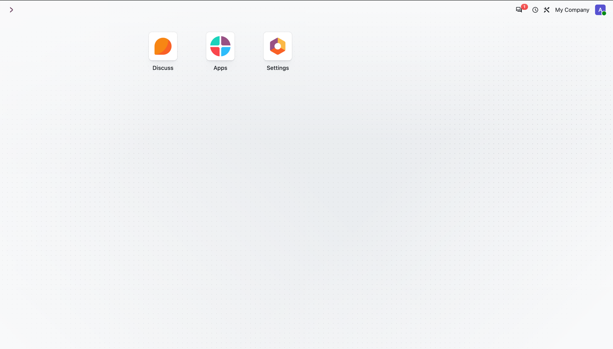
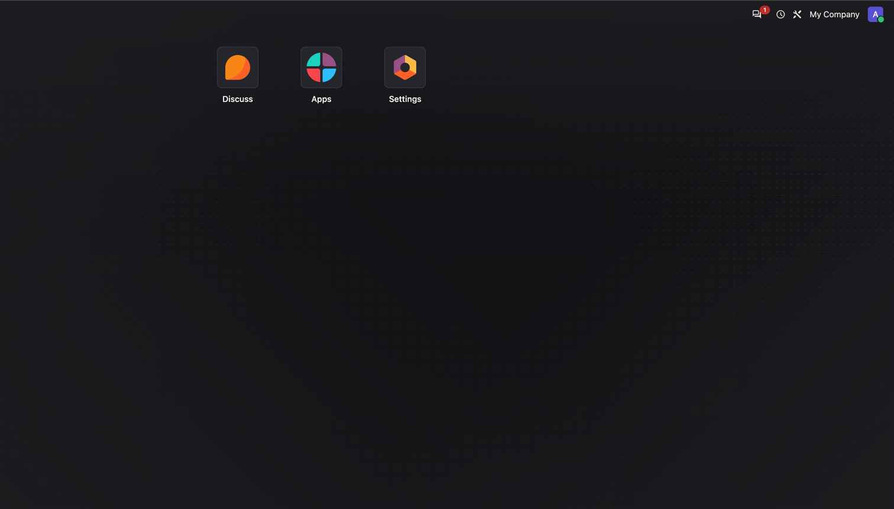

Enhance your backend with a responsive home menu, navigation improvements, and light and dark themes.
Dependencies: web and base_setup. Category: Tools/Usability. The module declares automatic installation when web is installed and its dependencies are available.
Open the user menu, select Preferences, and choose System, Light, or Dark in the Theme field under Other Preferences. Save your choice. System follows your browser or operating system color preference.
Open the application switcher to use the home menu, search for menus, or drag app icons to reorder them. On smaller screens, use the burger menu for navigation.
For geolocation integrations, optionally enter a token in the Mapbox setting in Settings. A token is not required for the responsive layout or themes. This addon provides geolocation helpers and does not add a standalone map view.
This module customizes core backend assets and replaces the web client entry point. Check compatibility when combining it with other backend themes or navigation addons. View availability depends on installed apps.
If old styles remain after installation or upgrade, reload the page or perform a hard refresh. For asset loading failures, check the Odoo server log and configured addons path.
Launch installed applications from the home menu with a light background.

Use the same application launcher with the dark color scheme.

License: LGPL-3.